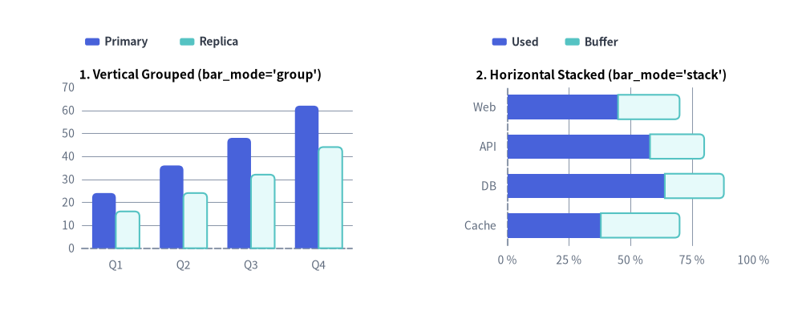
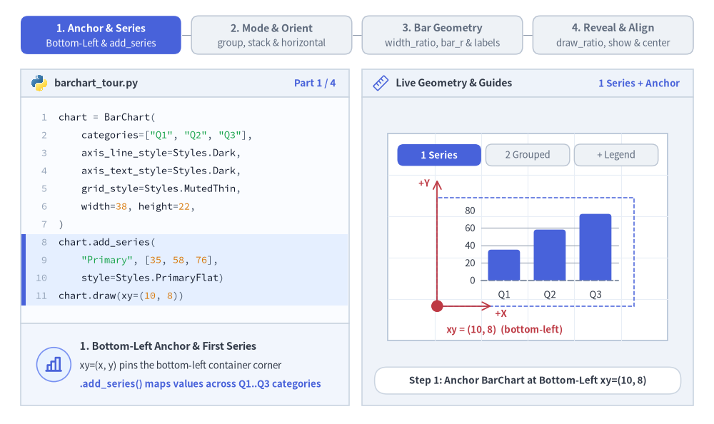
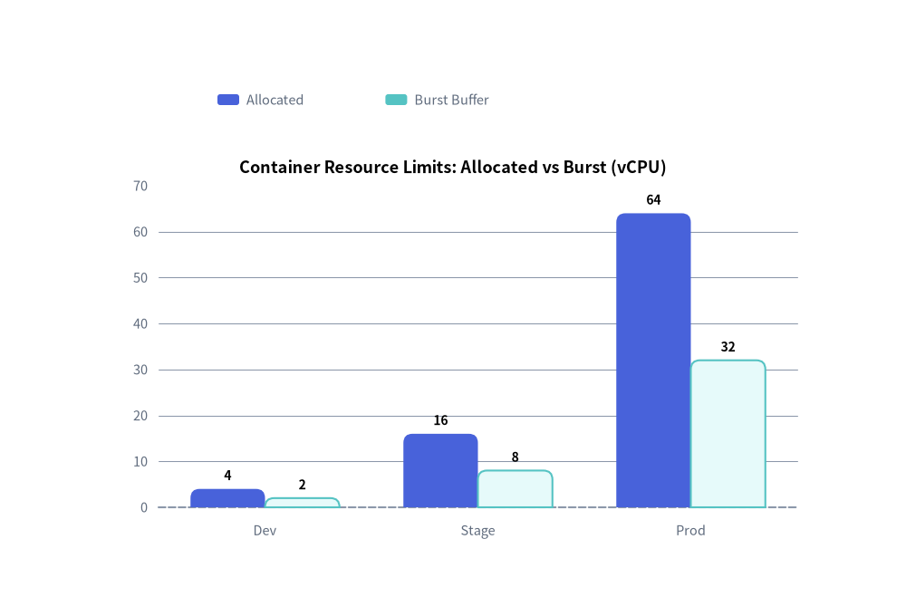
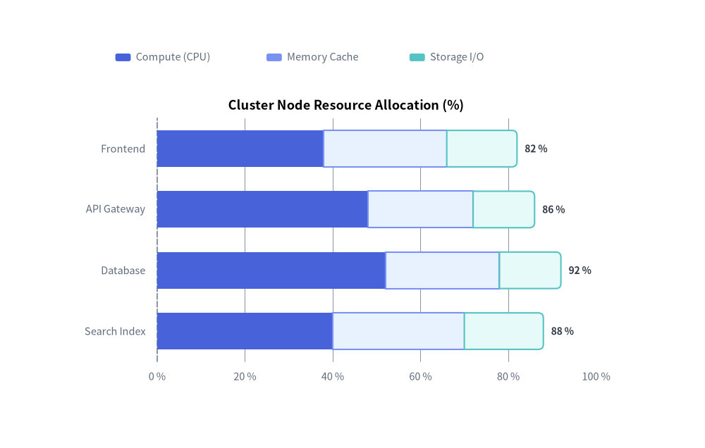

Bar Chart（棒グラフ）：縦棒・横棒・集合・積み上げ
BarChart コンポーネント（drawlib.charts.bar）は、1 つ以上の系列にわたる離散カテゴリ指標を比較するための縦棒（カラム）または横棒を描画します。並列の集合棒グラフ、累積の積み上げ棒グラフ、外端角丸め（bar_r）、インライン数値ラベル、向きに応じた軸プロパティ、および分離配置型の凡例描画をサポートしています。

Source Code
from drawlib.canvas import save, setup
from drawlib.charts.bar import BarChart
from drawlib.styles import Styles
setup(width=132, height=52)
# Left: Vertical Grouped (orientation="vertical", bar_mode="group")
vert_chart = BarChart(
categories=["Q1", "Q2", "Q3", "Q4"],
axis_line_style=Styles.MutedDashed,
axis_text_style=Styles.Muted.patch(text_size=10.0),
grid_style=Styles.MutedThin,
width=56.0,
height=36.0,
orientation="vertical",
bar_mode="group",
bar_r=0.8,
title="1. Vertical Grouped (bar_mode='group')",
title_style=Styles.BlackBold.patch(text_size=11.0),
)
vert_chart.add_series("Primary", [24.0, 36.0, 48.0, 62.0], style=Styles.PrimaryFlat)
vert_chart.add_series("Replica", [16.0, 24.0, 32.0, 44.0], style=Styles.SecondaryNeutral)
vert_chart.draw(xy=(5.0, 6.0))
vert_chart.draw_legend(xy=(14.0, 45.0), text_style=Styles.DarkBold.patch(text_size=10.0), orientation="horizontal")
# Right: Horizontal Stacked (orientation="horizontal", bar_mode="stack")
horiz_chart = BarChart(
categories=["Web", "API", "DB", "Cache"],
axis_line_style=Styles.MutedDashed,
axis_text_style=Styles.Muted.patch(text_size=10.0),
grid_style=Styles.MutedThin,
width=56.0,
height=36.0,
orientation="horizontal",
bar_mode="stack",
bar_width_ratio=0.62,
bar_r=0.8,
title="2. Horizontal Stacked (bar_mode='stack')",
title_style=Styles.BlackBold.patch(text_size=11.0),
)
horiz_chart.add_series("Used", [45.0, 58.0, 64.0, 38.0], style=Styles.PrimaryFlat)
horiz_chart.add_series("Buffer", [25.0, 22.0, 24.0, 32.0], style=Styles.SecondaryNeutral)
horiz_chart.configure_x_axis(min_value=0, max_value=100, tick_step=25, unit="%")
horiz_chart.draw(xy=(71.0, 6.0))
horiz_chart.draw_legend(xy=(81.0, 45.0), text_style=Styles.DarkBold.patch(text_size=10.0), orientation="horizontal")
save()
1. 基本概念と基本的な使い方
BarChart はデフォルトでコンテナの左下 (x, y) を基準にアンカーされ（align="center" で中央基準も可）、.add_series(...) でカテゴリデータ系列を段階的に登録します。並列クラスタ表示（bar_mode="group"）、累積積み上げ表示（bar_mode="stack"）、横向きトポロジ（"horizontal"）をシームレスに切り替えられるほか、スロット占有幅（bar_width_ratio）、外端角丸め（bar_r）、インライン数値ラベルの調整や、部分描画（draw_ratio）・系列の表示切り替え（.show）によるアニメーションにも対応しています。

Source Code
from __future__ import annotations
from drawlib.anim import Animation
from drawlib.canvas import save, setup
from drawlib.charts.bar import BarChart
from drawlib.icons import code as code_icons
from drawlib.icons import phosphor
from drawlib.lines import line
from drawlib.shapes import circle, rectangle
from drawlib.smartarts import SourceCode, SourceCodeStyles
from drawlib.styles import Styles
from drawlib.text import text
W, H = 138.0, 82.0
setup(width=W, height=H)
anim = Animation(fps=10.0, loop=0)
CODE_TEXT_SIZE = 10.0
PT_TO_CANVAS = W / 720.0
FONT_CANVAS = CODE_TEXT_SIZE * PT_TO_CANVAS
LINE_H = FONT_CANVAS * 1.8
PAD_Y = FONT_CANVAS * 1.2
CODE_STYLES = SourceCodeStyles.get("default", font_lang="en", text_size=CODE_TEXT_SIZE).patch(
box_style=Styles.Neutral.patch(shape_fill_color=(0, 0, 0, 0), shape_line_width=0),
)
PANE_HEADER = Styles.Neutral.patch(
shape_fill_color=(238, 243, 250),
shape_line_color=(203, 213, 225),
shape_line_width=1.2,
shape_r=0.0,
)
EDITOR_BODY = Styles.Neutral.patch(
shape_fill_color=(250, 252, 255),
shape_line_color=(203, 213, 225),
shape_line_width=1.2,
shape_r=0.0,
)
TAKEAWAY_BODY = Styles.Neutral.patch(
shape_fill_color=(242, 246, 253),
shape_line_color=(203, 213, 225),
shape_line_width=1.2,
shape_r=0.0,
)
STUDIO_BODY = Styles.Neutral.patch(
shape_fill_color=(239, 243, 249),
shape_line_color=(203, 213, 225),
shape_line_width=1.2,
shape_r=0.0,
)
PART_ITEMS = [
("1. Anchor & Series", "Bottom-Left & add_series"),
("2. Mode & Orient", "group, stack & horizontal"),
("3. Bar Geometry", "width_ratio, bar_r & labels"),
("4. Reveal & Align", "draw_ratio, show & center"),
]
def draw_step_bar(active_part: int) -> None:
"""Draw top 4-part progress bar (active_part is 1..4)."""
pill_w = 31.0
pill_h = 7.4
gap = 2.0
start_x = 4.0 + pill_w / 2.0
cy = 75.2
for idx, (label, sublabel) in enumerate(PART_ITEMS, start=1):
cx = start_x + (idx - 1) * (pill_w + gap)
if idx > 1:
prev_cx = cx - (pill_w + gap)
line(
(prev_cx + pill_w / 2.0 + 0.2, cy),
(cx - pill_w / 2.0 - 0.2, cy),
style=Styles.PrimaryBold if idx <= active_part else Styles.MutedThin,
)
if idx == active_part:
st = Styles.PrimaryFlat.patch(shape_r=1.4)
tst = Styles.WhiteBold.patch(text_size=10.3)
sub_tst = Styles.White.patch(text_size=9.5)
elif idx < active_part:
st = Styles.PrimaryNeutral.patch(shape_r=1.4, shape_line_width=1.1)
tst = Styles.PrimaryBold.patch(text_size=10.3)
sub_tst = Styles.Primary.patch(text_size=9.5)
else:
st = Styles.Neutral.patch(shape_r=1.4, shape_line_width=1.1)
tst = Styles.MutedBold.patch(text_size=10.3)
sub_tst = Styles.Muted.patch(text_size=9.5)
rectangle((cx, cy), width=pill_w, height=pill_h, style=st)
text((cx, cy + 1.35), label, style=tst)
text((cx, cy - 1.55), sublabel, style=sub_tst)
def draw_left_pane(
active_part: int,
code_lines: list[str],
hl_range: tuple[int, int],
icon_fn: object,
summary_title: str,
summary_line1: str,
summary_line2: str,
) -> None:
"""Draw left Python code editor + bottom concept takeaway card."""
x0, w = 4.0, 63.5
cx = x0 + w / 2.0
top_y = 63.2
header_h = 5.4
editor_h = 43.8
takeaway_h = 15.8
rectangle((cx, top_y + header_h / 2.0), width=w, height=header_h, style=PANE_HEADER)
code_icons.python((x0 + 3.6, top_y + header_h / 2.0), width=3.4, style=Styles.Neutral)
text(
(x0 + 6.5, top_y + header_h / 2.0),
"barchart_tour.py",
style=Styles.DarkBold.patch(text_size=10.2, halign="left"),
)
text(
(x0 + w - 2.6, top_y + header_h / 2.0),
f"Part {active_part} / 4",
style=Styles.PrimaryBold.patch(text_size=9.8, halign="right"),
)
rectangle((cx, top_y - editor_h / 2.0), width=w, height=editor_h, style=EDITOR_BODY)
hl_start, hl_end = hl_range
hl_top = top_y - PAD_Y - hl_start * LINE_H
hl_bot = top_y - PAD_Y - (hl_end + 1) * LINE_H
hl_cy = (hl_top + hl_bot) / 2.0
hl_h = hl_top - hl_bot
rectangle(
(cx, hl_cy),
width=w - 0.6,
height=hl_h,
style=Styles.Neutral.patch(shape_fill_color=(229, 239, 255), shape_line_width=0),
)
rectangle(
(x0 + 0.55, hl_cy),
width=0.9,
height=hl_h,
style=Styles.PrimaryFlat.patch(shape_line_width=0),
)
SourceCode.draw(
xy=(x0, top_y),
width=w,
code="\n".join(code_lines),
styles=CODE_STYLES,
code_lang="python",
show_linenum=True,
align="top_left",
)
take_cy = 3.6 + takeaway_h / 2.0
rectangle((cx, take_cy), width=w, height=takeaway_h, style=TAKEAWAY_BODY)
circle(
(x0 + 6.4, take_cy),
radius=3.3,
style=Styles.PrimaryNeutral.patch(shape_line_width=1.2),
)
icon_fn((x0 + 6.4, take_cy), width=3.8, style=Styles.PrimaryBold) # type: ignore[operator]
text(
(x0 + 11.4, take_cy + 3.6),
summary_title,
style=Styles.DarkBold.patch(text_size=10.4, halign="left"),
)
text(
(x0 + 11.4, take_cy - 0.2),
summary_line1,
style=Styles.Dark.patch(text_size=9.7, halign="left"),
)
text(
(x0 + 11.4, take_cy - 3.8),
summary_line2,
style=Styles.PrimaryBold.patch(text_size=9.6, halign="left"),
)
def draw_geometry_studio(param_badge: str, footer_caption: str) -> tuple[float, float]:
"""Draw right geometry lab shell, inner coordinate sheet with subtle grid, and footer."""
x0, w = 70.0, 64.0
cx = x0 + w / 2.0
top_y = 63.2
header_h = 5.4
body_h = 59.6
rectangle((cx, top_y + header_h / 2.0), width=w, height=header_h, style=PANE_HEADER)
phosphor.ruler((x0 + 3.6, top_y + header_h / 2.0), width=3.4, style=Styles.Primary)
text(
(x0 + 6.5, top_y + header_h / 2.0),
"Live Geometry & Guides",
style=Styles.DarkBold.patch(text_size=10.2, halign="left"),
)
text(
(x0 + w - 2.6, top_y + header_h / 2.0),
param_badge,
style=Styles.PrimaryBold.patch(text_size=9.6, halign="right"),
)
rectangle((cx, 3.6 + body_h / 2.0), width=w, height=body_h, style=STUDIO_BODY)
sheet_cx, sheet_cy = cx, 36.2
sheet_w, sheet_h = 54.0, 40.0
sx0, sy0 = sheet_cx - sheet_w / 2.0, sheet_cy - sheet_h / 2.0
rectangle(
(sheet_cx, sheet_cy),
width=sheet_w,
height=sheet_h,
style=Styles.Neutral.patch(
shape_fill_color=(255, 255, 255),
shape_line_color=(180, 194, 214),
shape_line_width=1.2,
),
)
g_st = Styles.MutedThin.patch(line_color=(232, 238, 246), line_width=0.8)
for gx in range(1, 6):
vx = sx0 + gx * (sheet_w / 6.0)
line((vx, sy0), (vx, sy0 + sheet_h), style=g_st)
for gy in range(1, 5):
vy = sy0 + gy * (sheet_h / 5.0)
line((sx0, vy), (sx0 + sheet_w, vy), style=g_st)
rectangle(
(cx, 8.4),
width=59.2,
height=5.2,
style=Styles.Neutral.patch(
shape_fill_color=(255, 255, 255),
shape_line_color=(203, 213, 225),
shape_line_width=1.1,
shape_r=2.4,
),
text=footer_caption,
text_style=Styles.DarkBold.patch(text_size=9.8),
)
return sheet_cx, sheet_cy
def draw_sub_pills(scx: float, labels: list[str], active_idx: int) -> None:
"""Draw 3-step tracker pills near the top of the studio sheet."""
pw, ph, pgap = 16.2, 4.2, 0.9
p_start = scx - (3 * pw + 2 * pgap) / 2.0 + pw / 2.0
for idx, lbl in enumerate(labels):
px = p_start + idx * (pw + pgap)
if idx == active_idx:
pst = Styles.PrimaryFlat.patch(shape_r=1.2)
ptst = Styles.WhiteBold.patch(text_size=9.5)
elif idx < active_idx:
pst = Styles.PrimaryNeutral.patch(shape_r=1.2, shape_line_width=1.0)
ptst = Styles.PrimaryBold.patch(text_size=9.5)
else:
pst = Styles.Neutral.patch(shape_r=1.2, shape_line_width=1.0)
ptst = Styles.Muted.patch(text_size=9.5)
rectangle((px, 52.0), width=pw, height=ph, style=pst, text=lbl, text_style=ptst)
AXIS_TXT = Styles.Dark.patch(text_size=9.6)
LEGEND_TXT = Styles.DarkBold.patch(text_size=9.6)
VAL_TXT = Styles.DarkBold.patch(text_size=9.5)
# =========================================================================
# Part 1: Anchor & Series — Bottom-Left xy & add_series + draw_legend
# =========================================================================
PART1_STATES = [
(
1,
False,
3.3,
[
"chart = BarChart(",
' categories=["Q1", "Q2", "Q3"],',
" axis_line_style=Styles.Dark,",
" axis_text_style=Styles.Dark,",
" grid_style=Styles.MutedThin,",
" width=38, height=22,",
")",
"chart.add_series(",
' "Primary", [35, 58, 76],',
" style=Styles.PrimaryFlat)",
"chart.draw(xy=(10, 8))",
],
(7, 10),
"1 Series + Anchor",
"Step 1: Anchor BarChart at Bottom-Left xy=(10, 8)",
"1. Bottom-Left Anchor & First Series",
"xy=(x, y) pins the bottom-left container corner",
".add_series() maps values across Q1..Q3 categories",
),
(
2,
False,
3.3,
[
"chart = BarChart(",
' categories=["Q1", "Q2", "Q3"],',
' bar_mode="group", ...)',
"chart.add_series(",
' "Primary", [35, 58, 76],',
" style=Styles.PrimaryFlat)",
"chart.add_series(",
' "Replica", [22, 38, 50],',
" style=Styles.SecondaryNeutral)",
"chart.draw(xy=(10, 8))",
],
(6, 8),
'bar_mode="group"',
'Step 2: Cluster 2 Series Side-by-Side (bar_mode="group")',
"2. Clustered Multi-Series Comparison",
"Second .add_series() subdivides each category bin",
"Calm SecondaryNeutral grounds the companion series",
),
(
2,
True,
3.5,
[
"chart = BarChart(",
' categories=["Q1", "Q2", "Q3"],',
' bar_mode="group", ...)',
'chart.add_series("Primary", ...)',
'chart.add_series("Replica", ...)',
"chart.draw(xy=(10, 8))",
"chart.draw_legend(",
" xy=(15, 33),",
" text_style=Styles.DarkBold,",
' orientation="horizontal")',
],
(6, 9),
"draw_legend()",
"Step 3: Place Decoupled Horizontal Legend Above Plot",
"3. Decoupled Series Legend (draw_legend)",
"Renders series color swatches at independent xy",
"Container bounds stay locked without inner squeeze",
),
]
for p1_idx, (n_ser, show_leg, dur, code_1, hl_rng, badge_txt, foot_txt, s_t, s_1, s_2) in enumerate(PART1_STATES):
with anim.frame(duration=dur):
draw_step_bar(1)
draw_left_pane(1, code_1, hl_rng, phosphor.chart_bar, s_t, s_1, s_2)
scx, scy = draw_geometry_studio(badge_txt, foot_txt)
draw_sub_pills(scx, ["1 Series", "2 Grouped", "+ Legend"], p1_idx)
cx0, cy0, cw, ch = 84.5, 22.8, 38.0, 21.0
chart = BarChart(
categories=["Q1", "Q2", "Q3"],
axis_line_style=Styles.MutedDashed,
axis_text_style=AXIS_TXT,
grid_style=Styles.MutedThin,
width=cw,
height=ch,
bar_mode="group",
bar_r=0.6,
)
chart.add_series("Primary", [35.0, 58.0, 76.0], style=Styles.PrimaryFlat)
if n_ser >= 2:
chart.add_series("Replica", [22.0, 38.0, 50.0], style=Styles.SecondaryNeutral)
chart.configure_y_axis(min_value=0, max_value=80, tick_step=20)
chart.draw(xy=(cx0, cy0))
# Dashed container bounding box
rectangle(
(cx0 + cw / 2.0, cy0 + ch / 2.0),
width=cw,
height=ch,
style=Styles.PrimaryDashed.patch(shape_fill_color=(0, 0, 0, 0), shape_line_width=1.1),
)
if show_leg:
chart.draw_legend(
xy=(92.0, 46.3),
text_style=LEGEND_TXT,
orientation="horizontal",
swatch_width=2.4,
swatch_height=1.2,
item_gap=3.2,
)
circle((90.5, 46.3), radius=0.75, style=Styles.DangerFlat)
# Bottom-Left xy anchor dot + +X / +Y Cartesian axes
line(
(cx0, cy0),
(cx0, cy0 + ch + 3.4),
arrow_head="->",
style=Styles.DangerBold.patch(line_width=1.3),
)
text(
(cx0 - 1.4, cy0 + ch + 2.8),
"+Y",
style=Styles.DangerBold.patch(text_size=9.5, halign="right"),
)
line(
(cx0, cy0),
(cx0 + 10.5, cy0),
arrow_head="->",
style=Styles.DangerBold.patch(line_width=1.3),
)
text(
(cx0 + 11.2, cy0 - 1.4),
"+X",
style=Styles.DangerBold.patch(text_size=9.5, halign="left"),
)
circle((cx0, cy0), radius=1.15, style=Styles.DangerFlat)
text(
(cx0 + 1.8, 18.2),
"xy = (10, 8) (bottom-left)",
style=Styles.DangerBold.patch(text_size=9.5, halign="left"),
)
# =========================================================================
# Part 2: Mode & Orient — group, stack & orientation="horizontal"
# =========================================================================
PART2_STATES = [
(
"vertical",
"group",
3.3,
[
"chart = BarChart(",
' categories=["Q1", "Q2", "Q3"],',
' orientation="vertical",',
' bar_mode="group",',
" width=38, height=22, ...)",
"chart.add_series(",
' "Used", [36, 48, 56], ...)',
"chart.add_series(",
' "Free", [24, 22, 26], ...)',
"chart.draw(xy=(10, 8))",
],
(2, 3),
'bar_mode="group"',
'bar_mode="group": Side-by-Side Vertical Clusters',
'Clustered Columns (bar_mode="group")',
"Compares individual series magnitudes per category",
"Y-axis scales to max single series (60)",
),
(
"vertical",
"stack",
3.3,
[
"chart = BarChart(",
' categories=["Q1", "Q2", "Q3"],',
' orientation="vertical",',
' bar_mode="stack",',
" width=38, height=22, ...)",
"chart.add_series(",
' "Used", [36, 48, 56], ...)',
"chart.add_series(",
' "Free", [24, 22, 26], ...)',
"chart.draw(xy=(10, 8))",
],
(3, 3),
'bar_mode="stack"',
'bar_mode="stack": Cumulative Part-to-Whole Totals',
'Cumulative Stack (bar_mode="stack")',
"Stacks Used + Free vertically (totals: 60, 70, 82)",
"Y-axis automatically expands to cumulative max (100)",
),
(
"horizontal",
"stack",
3.5,
[
"chart = BarChart(",
' categories=["Q1", "Q2", "Q3"],',
' orientation="horizontal",',
' bar_mode="stack",',
" width=40, height=22, ...)",
'chart.add_series("Used", ...)',
'chart.add_series("Free", ...)',
"chart.configure_x_axis(",
' max_value=100, unit="%")',
"chart.draw(xy=(8, 8))",
],
(2, 3),
'orient="horizontal"',
'orientation="horizontal": Categories on Y, Values on X',
'Horizontal Topology (orientation="horizontal")',
"Bars grow rightward from left Y-axis baseline",
"chart.value_axis swaps automatically to x_axis",
),
]
for p2_idx, (orient, bmode, dur, code_2, hl_rng, badge_txt, foot_txt, s_t, s_1, s_2) in enumerate(PART2_STATES):
with anim.frame(duration=dur):
draw_step_bar(2)
draw_left_pane(2, code_2, hl_rng, phosphor.stack, s_t, s_1, s_2)
scx, scy = draw_geometry_studio(badge_txt, foot_txt)
draw_sub_pills(scx, ['mode="group"', 'mode="stack"', "horizontal"], p2_idx)
if orient == "vertical":
cx0, cy0, cw, ch = 83.5, 21.5, 38.0, 22.5
chart = BarChart(
categories=["Q1", "Q2", "Q3"],
axis_line_style=Styles.MutedDashed,
axis_text_style=AXIS_TXT,
grid_style=Styles.MutedThin,
width=cw,
height=ch,
orientation="vertical",
bar_mode=bmode,
bar_r=0.7,
)
chart.add_series("Used", [36.0, 48.0, 56.0], style=Styles.PrimaryFlat)
chart.add_series("Free", [24.0, 22.0, 26.0], style=Styles.SecondaryNeutral)
chart.draw(xy=(cx0, cy0))
chart.draw_legend(
xy=(91.5, 46.2),
text_style=LEGEND_TXT,
orientation="horizontal",
item_gap=3.5,
)
if bmode == "group":
text(
(scx, 18.6),
"side-by-side clusters • y_axis = value_axis",
style=Styles.DarkBold.patch(text_size=9.5),
)
else:
text(
(scx, 18.6),
"cumulative stack (56 + 26 = 82) • tip-only rounding",
style=Styles.PrimaryBold.patch(text_size=9.5),
)
else:
cx0, cy0, cw, ch = 81.0, 21.5, 41.0, 22.5
chart = BarChart(
categories=["Q1", "Q2", "Q3"],
axis_line_style=Styles.MutedDashed,
axis_text_style=AXIS_TXT,
grid_style=Styles.MutedThin,
width=cw,
height=ch,
orientation="horizontal",
bar_mode="stack",
bar_width_ratio=0.62,
bar_r=0.7,
)
chart.add_series("Used", [36.0, 48.0, 56.0], style=Styles.PrimaryFlat)
chart.add_series("Free", [24.0, 22.0, 26.0], style=Styles.SecondaryNeutral)
chart.configure_x_axis(min_value=0, max_value=100, tick_step=50, format="{:.0f}%")
chart.draw(xy=(cx0, cy0))
chart.draw_legend(
xy=(91.5, 46.2),
text_style=LEGEND_TXT,
orientation="horizontal",
item_gap=3.5,
)
text(
(scx, 18.6),
"categories on Y • x_axis = value_axis (0%..100%)",
style=Styles.PrimaryBold.patch(text_size=9.5),
)
# =========================================================================
# Part 3: Bar Geometry — bar_width_ratio, bar_r & value_text_style
# =========================================================================
PART3_STATES = [
(
"width_ratio",
3.3,
[
"# Slim (0.45) vs Wide (0.78)",
"slim = BarChart(",
' categories=["Q1", "Q2"],',
" bar_width_ratio=0.45, ...)",
"wide = BarChart(",
' categories=["Q1", "Q2"],',
" bar_width_ratio=0.78, ...)",
'slim.add_series("CPU", [54, 82],',
" style=Styles.SecondaryNeutral)",
'wide.add_series("CPU", [54, 82],',
" style=Styles.PrimaryFlat)",
],
(1, 6),
"0.45 vs 0.78",
"bar_width_ratio: Slim (0.45) vs. Wide (0.78) Slot Fill",
"Slot Occupancy (bar_width_ratio)",
"Controls fraction (0.1..1.0) of each category slot",
"Lower ratios add breathing room; higher feel dense",
),
(
"bar_r",
3.3,
[
"chart = BarChart(",
' categories=["Q1", "Q2", "Q3"],',
" bar_width_ratio=0.68,",
" bar_r=0.8,",
" width=38, height=22, ...)",
"chart.add_series(",
' "CPU", [54, 76, 92],',
" style=Styles.PrimaryFlat)",
"chart.draw(xy=(10, 8))",
],
(2, 3),
"bar_r = 0.8",
"bar_r=0.8: Rounds Only the 2 Outer Tip Corners",
"Outer-Tip Rounding (bar_r = 0.8)",
"Rounds the 2 outer tip corners of each bar",
"Baseline corners stay flush (r=0) on the X-axis",
),
(
"val_labels",
3.5,
[
"chart = BarChart(",
' categories=["Q1", "Q2", "Q3"],',
" bar_r=0.8,",
" value_text_style=(",
" Styles.DarkBold),",
' value_format="{:.0f}%", ...)',
'chart.add_series("CPU", ...)',
"chart.configure_y_axis(",
" max_value=100,",
' format="{:.0f}%")',
"chart.draw(xy=(10, 8))",
],
(3, 5),
"value_text_style",
'value_text_style + "{:.0f}%": Inline Labels Outside Tips',
"Inline Value Annotations",
"Opt into value_text_style to print metrics on tips",
"Formatted cleanly as 54%, 76%, 92% above columns",
),
]
for p3_idx, (g_mode, dur, code_3, hl_rng, badge_txt, foot_txt, s_t, s_1, s_2) in enumerate(PART3_STATES):
with anim.frame(duration=dur):
draw_step_bar(3)
draw_left_pane(3, code_3, hl_rng, phosphor.corners_out, s_t, s_1, s_2)
scx, scy = draw_geometry_studio(badge_txt, foot_txt)
draw_sub_pills(scx, ["width_ratio", "bar_r = 0.8", "Value Labels"], p3_idx)
if g_mode == "width_ratio":
slim = BarChart(
categories=["Q1", "Q2"],
axis_line_style=Styles.MutedDashed,
axis_text_style=AXIS_TXT,
grid_style=Styles.MutedThin,
width=22.5,
height=21.0,
bar_width_ratio=0.45,
)
slim.add_series("CPU", [54.0, 82.0], style=Styles.SecondaryNeutral)
slim.configure_y_axis(min_value=0, max_value=100, tick_step=50)
slim.draw(xy=(77.0, 22.0))
text((89.8, 45.2), "ratio = 0.45", style=Styles.DarkBold.patch(text_size=9.5))
wide = BarChart(
categories=["Q1", "Q2"],
axis_line_style=Styles.MutedDashed,
axis_text_style=AXIS_TXT,
grid_style=Styles.MutedThin,
width=22.5,
height=21.0,
bar_width_ratio=0.78,
)
wide.add_series("CPU", [54.0, 82.0], style=Styles.PrimaryFlat)
wide.configure_y_axis(min_value=0, max_value=100, tick_step=50)
wide.draw(xy=(103.5, 22.0))
text((116.2, 45.2), "ratio = 0.78", style=Styles.PrimaryBold.patch(text_size=9.5))
text(
(scx, 18.6),
"45% slim bars vs. 78% wide slot occupancy",
style=Styles.DarkBold.patch(text_size=9.5),
)
elif g_mode == "bar_r":
cx0, cy0, cw, ch = 83.5, 22.0, 38.0, 22.0
chart = BarChart(
categories=["Q1", "Q2", "Q3"],
axis_line_style=Styles.MutedDashed,
axis_text_style=AXIS_TXT,
grid_style=Styles.MutedThin,
width=cw,
height=ch,
bar_width_ratio=0.68,
bar_r=0.8,
)
chart.add_series("CPU", [54.0, 76.0, 92.0], style=Styles.PrimaryFlat)
chart.configure_y_axis(min_value=0, max_value=100, tick_step=50)
chart.draw(xy=(cx0, cy0))
text(
(106.0, 45.6),
"rounded outer tips (bar_r = 0.8)",
style=Styles.PrimaryBold.patch(text_size=9.5),
)
text(
(scx, 18.6),
"bottom corners stay flush (r = 0) on X-axis baseline",
style=Styles.DarkBold.patch(text_size=9.5),
)
else:
cx0, cy0, cw, ch = 84.5, 21.8, 38.0, 22.0
chart = BarChart(
categories=["Q1", "Q2", "Q3"],
axis_line_style=Styles.MutedDashed,
axis_text_style=AXIS_TXT,
grid_style=Styles.MutedThin,
value_text_style=VAL_TXT,
value_format="{:.0f}%",
width=cw,
height=ch,
bar_width_ratio=0.62,
bar_r=0.8,
)
chart.add_series("CPU", [54.0, 76.0, 92.0], style=Styles.PrimaryFlat)
chart.configure_y_axis(min_value=0, max_value=100, tick_step=50, format="{:.0f}%")
chart.draw(xy=(cx0, cy0))
text(
(scx, 18.6),
'inline tip labels: "54%", "76%", "92%"',
style=Styles.PrimaryBold.patch(text_size=9.5),
)
# =========================================================================
# Part 4: Reveal & Align — draw_ratio, s2.show=False & align="center"
# =========================================================================
PART4_STATES = [
(
"draw_ratio",
3.3,
[
"chart = BarChart(",
' categories=["Q1", "Q2", "Q3"],',
' bar_mode="group", ...)',
"s1 = chart.add_series(",
' "Primary", [40, 64, 88],',
" style=Styles.PrimaryFlat,",
" draw_ratio=0.55)",
"s2 = chart.add_series(",
' "Replica", [30, 48, 66],',
" ..., draw_ratio=0.55)",
"chart.draw(xy=(10, 8))",
],
(5, 9),
"draw_ratio=0.55",
"draw_ratio=0.55: Partial Spatial Growth From Baseline",
"Animated Reveal (draw_ratio = 0.55)",
"Grows bars upward (vertical) or rightward (horiz)",
"Great for smooth ease-out build-in chart animations",
),
(
"hide_s2",
3.3,
[
"chart = BarChart(",
' categories=["Q1", "Q2", "Q3"],',
' bar_mode="group", ...)',
"s1 = chart.add_series(",
' "Primary", [28, 40, 48], ...)',
"s2 = chart.add_series(",
' "Replica", [55, 76, 92], ...)',
"# Hide s2; Y-axis max stays 100!",
"s2.show = False",
"chart.draw(xy=(10, 8))",
],
(7, 8),
"s2.show = False",
"s2.show=False: Hides Series While Locking Y-Axis Max=100",
"Axis-Stable Visibility (s2.show = False)",
"Hides Replica bars & legend entry without rescaling",
"Y-axis stays locked at 0..100 for steady comparisons",
),
(
"center_align",
3.5,
[
"chart = BarChart(",
' categories=["Q1", "Q2", "Q3"],',
" width=38, height=22,",
' bar_mode="group", ...)',
'chart.add_series("Primary", ...)',
'chart.add_series("Replica", ...)',
"",
"# Center container on xy=(cx, cy)",
"chart.draw(",
" xy=(34, 24),",
' align="center")',
],
(7, 10),
'align="center"',
'align="center": Centers Container Box on xy=(cx, cy)',
'Centered Anchor (align="center")',
"Centers total (width, height) container on xy",
"Ideal for dashboard grid cells and centered cards",
),
]
for p4_idx, (r_mode, dur, code_4, hl_rng, badge_txt, foot_txt, s_t, s_1, s_2) in enumerate(PART4_STATES):
with anim.frame(duration=dur):
draw_step_bar(4)
draw_left_pane(4, code_4, hl_rng, phosphor.crosshair, s_t, s_1, s_2)
scx, scy = draw_geometry_studio(badge_txt, foot_txt)
draw_sub_pills(scx, ["draw_ratio=0.55", "s2.show=False", 'align="center"'], p4_idx)
if r_mode == "draw_ratio":
cx0, cy0, cw, ch = 83.5, 22.0, 38.0, 22.0
chart = BarChart(
categories=["Q1", "Q2", "Q3"],
axis_line_style=Styles.MutedDashed,
axis_text_style=AXIS_TXT,
grid_style=Styles.MutedThin,
width=cw,
height=ch,
bar_mode="group",
bar_r=0.6,
)
chart.add_series("Primary", [40.0, 64.0, 88.0], style=Styles.PrimaryFlat, draw_ratio=0.55)
chart.add_series("Replica", [30.0, 48.0, 66.0], style=Styles.SecondaryNeutral, draw_ratio=0.55)
chart.configure_y_axis(min_value=0, max_value=100, tick_step=50)
chart.draw(xy=(cx0, cy0))
# Upward growth indicator arrows in plot area
for ax_x, y_from, y_to in ((95.2, 30.5, 34.2), (104.0, 32.8, 37.6), (112.8, 35.0, 40.8)):
line(
(ax_x, y_from),
(ax_x, y_to),
arrow_head="->",
style=Styles.PrimaryBold.patch(line_width=1.2),
)
text(
(scx, 45.6),
"55% upward growth toward full target height",
style=Styles.PrimaryBold.patch(text_size=9.5),
)
text(
(scx, 18.6),
"draw_ratio = 0.55 (axis stays locked at 0..100)",
style=Styles.DarkBold.patch(text_size=9.5),
)
elif r_mode == "hide_s2":
cx0, cy0, cw, ch = 83.5, 22.0, 38.0, 22.0
chart = BarChart(
categories=["Q1", "Q2", "Q3"],
axis_line_style=Styles.MutedDashed,
axis_text_style=AXIS_TXT,
grid_style=Styles.MutedThin,
width=cw,
height=ch,
bar_mode="group",
bar_r=0.6,
)
chart.add_series("Primary", [28.0, 40.0, 48.0], style=Styles.PrimaryFlat)
s2 = chart.add_series("Replica", [55.0, 76.0, 92.0], style=Styles.SecondaryNeutral)
s2.show = False
chart.draw(xy=(cx0, cy0))
chart.draw_legend(xy=(96.5, 45.8), text_style=LEGEND_TXT, orientation="horizontal")
text(
(scx, 18.6),
"s2 hidden • Y-axis max stays locked at 100!",
style=Styles.PrimaryBold.patch(text_size=9.5),
)
else:
cx_a, cy_a = scx, 33.4
cw, ch = 38.0, 21.5
chart = BarChart(
categories=["Q1", "Q2", "Q3"],
axis_line_style=Styles.MutedDashed,
axis_text_style=AXIS_TXT,
grid_style=Styles.MutedThin,
width=cw,
height=ch,
bar_mode="group",
bar_r=0.6,
)
chart.add_series("Primary", [35.0, 58.0, 76.0], style=Styles.PrimaryNeutral)
chart.add_series("Replica", [22.0, 38.0, 50.0], style=Styles.SecondaryNeutral)
chart.configure_y_axis(min_value=0, max_value=80, tick_step=40)
chart.draw(xy=(cx_a, cy_a), align="center")
rectangle(
(cx_a, cy_a),
width=cw,
height=ch,
style=Styles.PrimaryDashed.patch(shape_fill_color=(0, 0, 0, 0), shape_line_width=1.3),
)
# Red (cx, cy) center crosshair extending cleanly outside container
line((cx_a - 21.8, cy_a), (cx_a - 19.0, cy_a), style=Styles.DangerBold.patch(line_width=1.5))
line((cx_a + 19.0, cy_a), (cx_a + 21.8, cy_a), style=Styles.DangerBold.patch(line_width=1.5))
line((cx_a, cy_a + 10.75), (cx_a, cy_a + 13.5), style=Styles.DangerBold.patch(line_width=1.5))
line((cx_a, cy_a - 13.0), (cx_a, cy_a - 10.75), style=Styles.DangerBold.patch(line_width=1.5))
circle(
(cx_a, cy_a),
radius=1.6,
style=Styles.Neutral.patch(shape_fill_color=(255, 255, 255), shape_line_width=0),
)
circle((cx_a, cy_a), radius=1.15, style=Styles.DangerFlat)
text(
(cx_a, 18.4),
'xy = (cx, cy) • align="center"',
style=Styles.DangerBold.patch(text_size=9.5),
)
save()
- 左下アンカーと複数系列の構築（
xy,add_series,draw_legend）:BarChart.draw(xy)はデフォルトでコンテナの左下角にピン留めされ（align="bottom_left"）、登録された各Seriesをカテゴリごとに配置しつつ、独立したdraw_legend(...)と組み合わせられます。 - トポロジと向き（
bar_mode,orientation）:bar_modeで並列クラスタの"group"と累積合計の"stack"を切り替えたり、orientation="horizontal"を指定して左 Y 軸から右方向へ棒を伸ばしたりできます（value_axisも自動的にy_axisからx_axisへ切り替わります）。 - スロット幅・先端角丸め・数値ラベル（
bar_width_ratio,bar_r,value_text_style）: カテゴリスロットの占有比率（0.1〜1.0）を調整し、棒の外端 2 角のみにbar_rの角丸めを適用（積み上げ棒の内側境界はフラットに維持）し、フォーマット済みの先端ラベルを表示できます。 - 空間スイープ・表示制御・中央配置（
draw_ratio,.show,align="center"）:draw_ratioによる伸長アニメーション（縦向き時はデフォルトで"bottom_to_top"、横向き時は"left_to_right"。直交方向を指定すればカテゴリ順の順次表示）、軸スケールを変えないs.show = Falseでの非表示化、align="center"によるxy中心配置に対応しています。
2. クイック例：縦向き集合棒グラフによるリソース割り当て
from drawlib.canvas import save, setup
from drawlib.charts.bar import BarChart
from drawlib.styles import Styles
setup(width=100, height=68)
chart = BarChart(
categories=["Dev", "Stage", "Prod"],
axis_line_style=Styles.MutedDashed,
axis_text_style=Styles.Muted.patch(text_size=10.5),
grid_style=Styles.MutedThin,
value_text_style=Styles.BlackBold.patch(text_size=10.0),
width=82,
height=45,
title="Container Resource Limits: Allocated vs Burst (vCPU)",
title_style=Styles.BlackBold.patch(text_size=13.0),
bar_mode="group",
bar_r=1.0,
)
chart.add_series("Allocated", [4.0, 16.0, 64.0], style=Styles.PrimaryFlat)
chart.add_series("Burst Buffer", [2.0, 8.0, 32.0], style=Styles.SecondaryNeutral)
chart.draw(xy=(9, 7))
chart.draw_legend(xy=(24, 57), text_style=Styles.Muted.patch(text_size=10.5), orientation="horizontal")
save()

3. 横向き棒グラフとパーセンテージ軸フォーマット
orientation="horizontal" を設定すると、カテゴリ軸が左側の Y 軸に、数値軸が下側の X 軸に回転します。value_format と configure_x_axis(min_value=0, max_value=100, tick_step=20, unit="%") を組み合わせることで、すっきりとしたリソース使用率やベンチマーク内訳チャートを構築できます。
from drawlib.canvas import save, setup
from drawlib.charts.bar import BarChart
from drawlib.styles import Styles
setup(width=110, height=70)
chart = BarChart(
axis_line_style=Styles.MutedDashed,
categories=["Frontend", "API Gateway", "Database", "Search Index"],
width=84.0,
height=48.0,
orientation="horizontal",
bar_mode="stack",
bar_width_ratio=0.6,
bar_r=0.8,
title="Cluster Node Resource Allocation (%)",
title_style=Styles.BlackBold.patch(text_size=13.0),
axis_text_style=Styles.Muted.patch(text_size=10.5),
grid_style=Styles.MutedThin,
value_text_style=Styles.DarkBold.patch(text_size=10.0),
value_format="{:.0f}%",
)
chart.add_series("Compute (CPU)", [38.0, 48.0, 52.0, 40.0], style=Styles.PrimaryFlat)
chart.add_series("Memory Cache", [28.0, 24.0, 26.0, 30.0], style=Styles.PrimaryNeutral)
chart.add_series("Storage I/O", [16.0, 14.0, 14.0, 18.0], style=Styles.SecondaryNeutral)
chart.configure_x_axis(min_value=0, max_value=100, tick_step=20, unit="%")
chart.draw(xy=(12.0, 8.0))
chart.draw_legend(xy=(18.0, 61.0), text_style=Styles.Muted.patch(text_size=10.5), orientation="horizontal")
save()

4. API リファレンス
コンストラクタ（BarChart）
すべてのコンストラクタ引数はキーワード専用引数（*）です。
from drawlib.charts.bar import Axis, BarChart, DrawDirection, FormatterType, Mode, Orientation, Series
chart = BarChart(
*,
axis_line_style: Style,
width: float = 60.0,
height: float = 40.0,
categories: list[str] | None = None,
orientation: Orientation = "vertical",
bar_mode: Mode = "group",
bar_width_ratio: float = 0.7,
bar_r: float = 0.0,
axis_text_style: Style | None = None,
grid_style: Style | None = None,
value_text_style: Style | None = None,
value_format: FormatterType = None,
background_style: Style | None = None,
title: str = "",
title_style: Style | None = None,
)
| パラメータ | 型 | デフォルト | 説明 |
|---|---|---|---|
axis_line_style |
Style |
必須 | 座標ベースラインのストロークに用いる必須アンカースタイル。 |
width / height |
float |
60.0 / 40.0 |
キャンバス単位でのチャート全体のバウンディングボックス寸法。 |
categories |
list[str] | None |
None |
カテゴリ軸に沿った順序付きカテゴリ名リスト（例：["Q1", "Q2", "Q3"]）。 |
orientation |
"vertical" | "horizontal" |
"vertical" |
棒の伸長方向（縦向き／横向き）。 |
bar_mode |
"group" | "stack" |
"group" |
複数系列の配置モード（Mode）。 |
bar_width_ratio |
float |
0.7 |
各カテゴリスロットのうち棒が占める幅の割合（0.1〜1.0）。 |
bar_r |
float |
0.0 |
棒の外端 2 角に適用される角丸半径。 |
axis_text_style |
Style | None |
None |
目盛りラベルおよびカテゴリ名のスタイル。None の場合は省略されます。 |
grid_style |
Style | None |
None |
背景の数値グリッド線のスタイル。None の場合は省略されます。 |
value_text_style |
Style | None |
None |
棒の先端外側に描画される数値ラベルのスタイル。None の場合は省略されます。 |
value_format |
FormatterType |
None |
数値ラベル用のフォーマット文字列（例："{:.1f}%"）または関数 Callable[[float], str]。 |
background_style |
Style | None |
None |
チャート外枠の背景カードのスタイル。None の場合は省略されます。 |
title |
str |
"" |
コンテナ上部に描画されるチャートタイトル文字列。 |
title_style |
Style | None |
None |
title のタイポグラフィスタイル。タイトルを描画するには必須です。 |
メソッドとプロパティ
add_series(name: str, values: list[float], style: Style, legend_text_style: Style | None = None, *, show: bool = True, draw_ratio: float = 1.0, draw_direction: DrawDirection | None = None) -> Series: データ系列を登録し、変更可能なSeriesインスタンスを返します。draw_directionがNoneの場合、縦向きチャートでは"bottom_to_top"、横向きチャートでは"left_to_right"がデフォルトになります。configure_y_axis(...) -> Axis/configure_x_axis(...) -> Axis: 軸スケール（"linear"または"log"）、上下限（min_value、max_value）、目盛り（ticks、tick_step）、フォーマット（format、unit）、およびタイトル（label）を設定します。詳細は 軸・スケール・凡例 を参照してください。get_size() -> tuple[float, float]: チャートコンテナの(width, height)を返します。draw(xy: tuple[float, float] = (0.0, 0.0), *, width: float | None = None, height: float | None = None, scale: float = 1.0) -> None: 左下角xyを基準としてチャートを描画します。呼び出し単位での一時的な寸法上書きや一様な比例スケーリングscaleにも対応しています。draw_legend(xy: tuple[float, float], text_style: Style, orientation: Orientation = "vertical", swatch_width: float = 2.4, swatch_height: float = 1.2, item_gap: float = 4.0, *, scale: float = 1.0) -> None: 分離配置された系列凡例をxyに描画します。- プロパティ:
chart.series -> list[Series]: 登録済みSeriesオブジェクトのコピーを返します。chart.value_axis -> Axis: アクティブな数値軸（縦向き時はy_axis、横向き時はx_axis）を返します。chart.category_axis -> Axis: アクティブなカテゴリ軸（縦向き時はx_axis、横向き時はy_axis）を返します。chart.x_axis -> Axis/chart.y_axis -> Axis: 水平軸・垂直軸のAxisインスタンスへの直接アクセスを提供します。